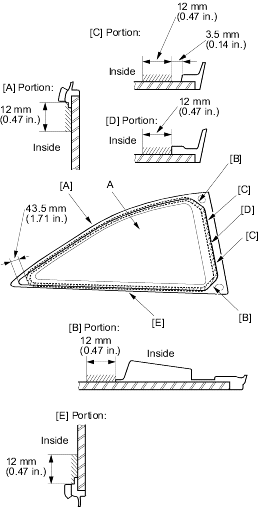
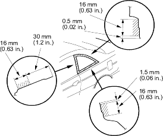
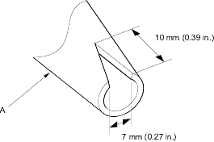

- With a sponge, apply a light coat of glass primer to the inside face of the quarter glass (A) as shown, then lightly wipe it off with gauze or cheesecloth:
- Do not apply body primer to the quarter glass and do not get body and glass primer sponges mixed up.
- Never touch the primed surfaces with your hands. If you do the adhesive may not bond to the quarter glass properly, causing a leak after the quarter glass is installed.
- Keep water, dust and abrasive materials away from the primed surface.

- With a sponge, apply a light coat of body primer to the original adhesive remaining around the quarter glass opening flange. Let the body primer dry for at least 10 minutes:
- Do not apply glass primer to the body and be careful not to mix up glass and body primer sponges.
- Never touch the primed surfaces with your hands.
- Mask off the dashboard before painting the flange.

- Before filling a cartridge, cut a ''V'' in the end of the nozzle (A) as shown.
